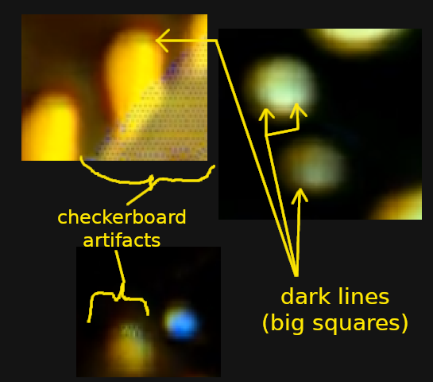

Aliasing and interference

Checkerboard artifacts in texture NCA (click to revisit video).
Beyond aliasing, we can consider other types of interference.
Repeated application of a convolution kernel can cause checkerboard artifacts, for example.
- Resonance between patterns and convolutions (and/or periodicity in time) could construct "rogue wave" type phenomena.
For a beautiful example of temporal aliasing in guitar strings, check out AcousticTrench playing the Last of Us them (youtube)